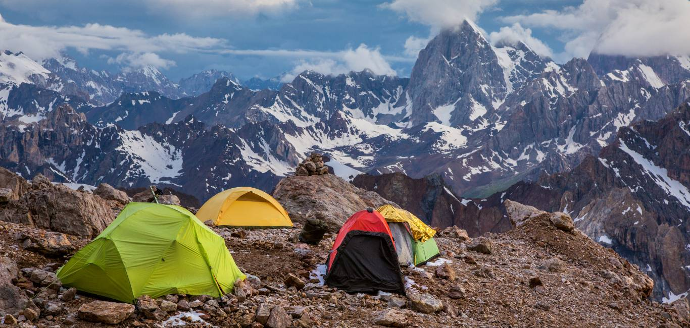
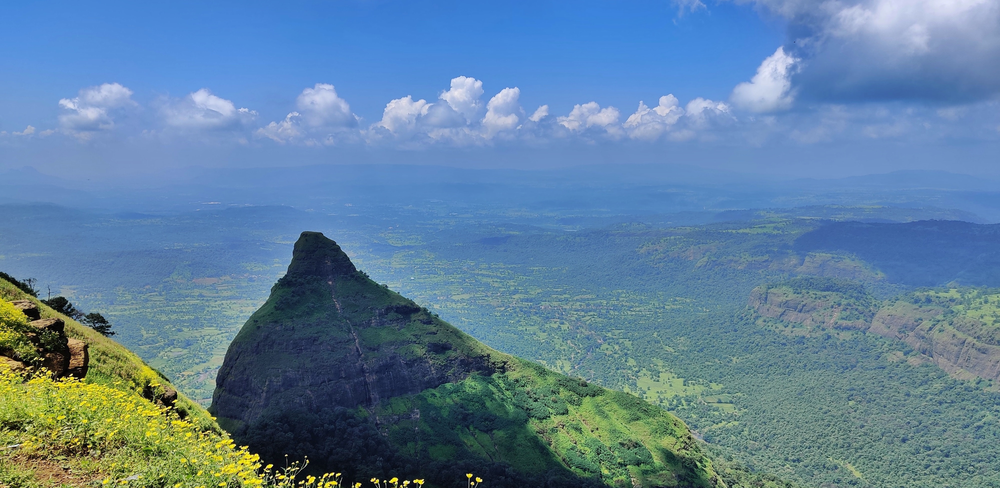
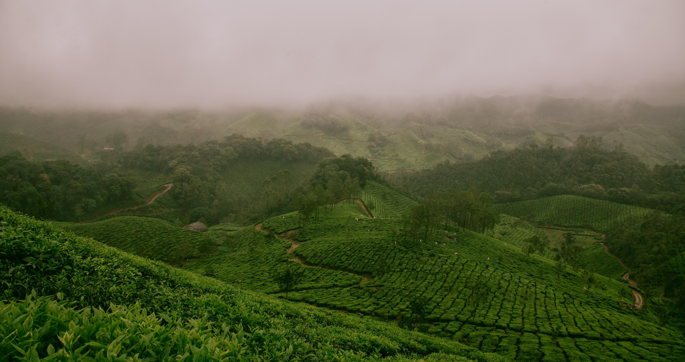
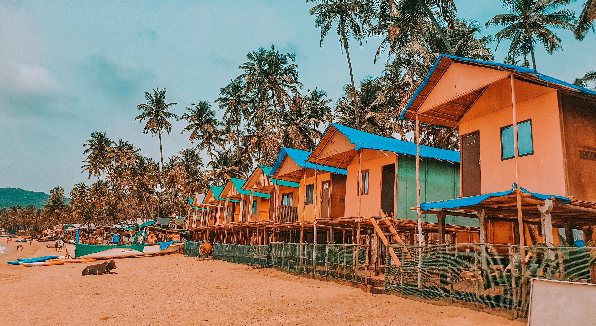

It's already the end of the year, and when I look back on 2021, the traveller in me can't help but wish that I had explored more. If only I had taken the last minute trip to Mashobra to watch the snow fall or extended my weekend getaway to Goa into a workation, I'd be over the moon! I did unlock a number of travel milestones, but in this world that's so big and beautiful, no amount of travelling is enough. So for 2022, to keep my travels more streamlined, experiences in India that I need to have next year and so should you!
Mountaineer in Himalayas
The Indian Himalayan region has always pulled in adventurers from all over the world. From legends to mountaineers of 21st century using skills and techniques to climb several summits have motivated several amateurs to follow their footsteps. I’m not a mountaineer but have met couple of them and heard stories. Peak climbing is now a demanding part of adventure tourism in India. Some of the notable peak climbing tours are Stok Kangri, Kang Yatse and Lungser Kangri in Ladakh; Black Peak, Pangarchula Peak, Rudragaira Peak in Garhwal; and Mt. Ladakhi, Friendship peak and Mt. Deo Tibba in Himachal Pradesh.
Uttarakhand - Ethereal Beauty and Trekking ..

Located in the Pithoragarh district of Uttarakhand, Chaukori is a very
picturesque location located between the high peaks of the western ranges
of the Himalayas. It is located in the northern region of Tibet, on the
southern side of Terai. The slow, winding Mahakali River flows along the
eastern borderline and forms part of the India-Nepal borderline. What you
can’t miss? – Chaukori is over 2000 meters high and offers wonderful views
of the Panchachuli Mountains, the Nanda Devi Mountains, and the Nanda Kot.
How to Reach? – If you are staying near to Berinag the Chaukori is 10km
away. Otherwise, you can travel by car or bus.
Lonavala: Trekking experience
Located approximately 106 km away from Mumbai, the hill station of Lonavala is known for the spectacular beauty of the green valleys that surround it. While there are umpteen things to do here, this list will give you an idea about the best things to do in Lonavala. What you can’t miss during your trip to Lonavala are Bhaja Caves and Karla Caves. Both of them are popular Budhhist shrines visited by thousands of tourists every year. Featuring intricate sculptures, these caves are considered to be the next best to those at Ajanta and Elora. You will also get an opportunity to experience the Bhushi Dam which often overflows during the monsoon seasons.
The OOty Experience
Ooty is a nice place to enjoy for honeymoon couples. I went to Ooty in the month of September. Eventhough the time is rainy season, fortunately my trip went without any rain. We get down at Mettupalayam from Chennai by Nilgiri Express. From there we got a steam train, which went through so many beatiful natural scenes, whhcih can't forget in my life time. That much greenary it is because of rainy season. So many Waterfalls on the way. The train will stop in some stations in between to enjoy the nature. Every one can get down and have a nice breeze near by waterfalls. Finally we arrived in Ooty by that steam train. After that we have reached a Form House Inside in the outskirts i.e. inside the Nilgiri Hills. Where they are providing Accommadation with food and also transportation for trips nearby. First time i experienced the snow fall inside that hills which i never seen before. Ofcourse until 9 o'clock we can't come out of the room because of cold. After that around 11, we have started and visited near by beatiful and natural forests where u only be there.
Goa Experience

One must visit goa in moonsoon season for greenery, cool weather.
Sometimes it is raining and again suddenly stops and rain. We had fun
time. North goa has many places to visit compare to south goa. But still
both places offers fun
Most of the beaches we have visited. More than temples and churches.
The only thing keep in mind is if someone want to come goa for waterrides
at beaches then a big NO to them in moonsoon season. Since there is no
water ride activities happen at beaches in rainy season. It is strictly
restricted by tourism. Forts and jungle trips on your own risk.
Transportation mode is good, bus and autos are budget transport mode,
taxis are bit expensive.
Food is awesome both veg and sea food.
Shopping is not much and again need to mention, open markets are closed
during moonsoon season which is july-September end.
Everywhere bargaining is important whether it is hotel accomodation or
shopping.
Overall it is relaxed fun trip. Great scenic with greenary and river trips
are awesome to visit goa. You will feel refreshed after goa visit.